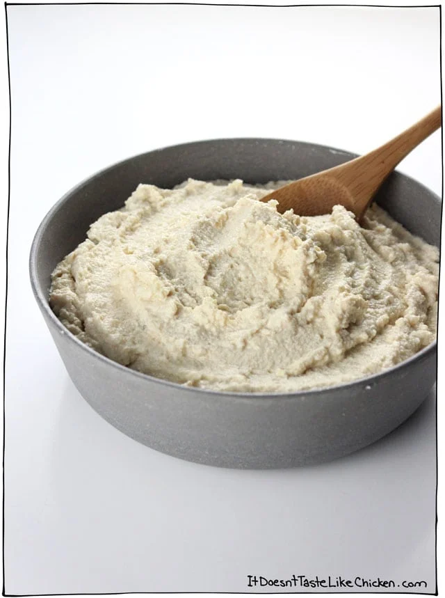

Vegan Ricotta

Description:
Quick and easy vegan ricotta from tofu! Very good in lasagna or on other saucy pasta.
Ingredients:
- 1 tbsp olive oil
- 1 yellow onion, chopped
- 2 cloves of garlic, minced
- 1 block extra firm tofu (350g)
- 1/4 cup fresh lemon juice
- 2 tbsp nutritional yeast
- 1 tbsp white miso paste
- 1/2 tsp salt
Steps:
- Heat oil in a skillet over med-high heat and add onion and garlic, Sauteing until translucent and starting
to brown.
- Break up you tofu and add to a food processor with remaining ingredients. Process until smooth, scraping the
sides as needed.
- If it's too think you can add water 1 tbsp at a time.
- Store in the fridge for up to 5 days, or the freezer for about 3 months.